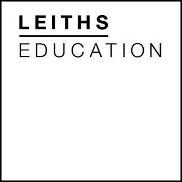
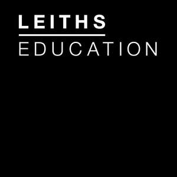

Trade Mark Journal No.2025/009 28 February 2025
UK00004161717 18 February 2025 (8,9,16,18,21,24,25,35,36,41)
Mark 1
Mark 2
Mark 3

Mark 4

- Class 8
- Knives.
- Class 9
- Software for culinary education and training; Electronic books and publications related to cooking, baking, nutrition and food science education; Apps for recipe collections, cooking tutorials; Downloadable video and audio content for culinary classes; Digital platforms for storing and sharing recipes; Digital guides and tools for step-by-step cooking instructions; Electronic certification for course completion; Elearning platforms for delivering culinary courses; Digital payment software solutions for class enrolments and product purchases; Audio guides and lectures on cooking techniques; Comprehensive online platforms for culinary education; Podcasts; Pre-recorded media; including any of the aforesaid goods being downloadable from the internet or a telecommunications network. .
- Class 16
- Recipe books; recipe cards; books; manuals and materials for teaching; printed matter; newsletters; periodicals; photographs; pictures; posters; stationery; paper bags; leaflets; calendars; envelopes; diaries; resources; curricula; lesson plans ; resources for teaching.
- Class 18
- Tote bags; canvas bags.
- Class 21
- Cooking utensils; mugs; cups; kitchen containers; rolling pins (for cooking purposes); wooden spoons (for cooking purposes) dough scrapers; oven gloves.
- Class 24
- Tea towels.
- Class 25
- Aprons; Chef's whites; trousers, t-shirts; Chef's hats.
- Class 35
- Employment agency services relating to chefs, cooks, teachers or teaching assistants of food and nutrition, cookery assistants.
- Class 36
- Providing scholarships and financial aid for culinary students.
- Class 41
- Culinary Education Services and Qualifications; Educational services related to cooking, baking, and culinary arts; In-person and online cooking classes and workshops; Specialised classes and workshops focused on culinary techniques; Comprehensive training programs for aspiring professional chefs; Courses on pairing food with wine; Hands-on workshops covering various cooking techniques and cuisines; Live demonstrations of cooking techniques and recipes; Web-based culinary education and training programs; Career counselling; Web-based wine education and training programs; Organising and hosting cooking competitions and contests; Organising and hosting food and education festivals; Events featuring guest chefs and culinary experts; Courses and workshops on nutrition and healthy eating; Providing consulting services in the field of culinary arts, cookery education, cookery teaching and kitchen management; Conducting seminars on various culinary topics; Publishing cookbooks and culinary guides; Workshops and classes on food photography; Organising exhibitions related to culinary arts and gastronomy; Offering Provision of internships, apprenticeships and practical training opportunities in culinary and hospitality; Online seminars and webinars focused on culinary topics; Workshops on developing and testing new recipes; Team building activities centred around cooking and culinary challenges; Classes and workshops on food styling for media and advertising; Classes focused on cooking for specific dietary needs (e.g., gluten-free, vegan); Cooking classes and workshops designed for children; Producing cooking shows for television and online platforms; Offering Provision of certification programs for culinary education; Hands-on interactive cooking experiences and workshops; Providing scholarships and financial aid for culinary students; Educational courses focusing on the science and art of gastronomy; Organising and hosting competitions for professional and amateur chefs; Offering Provision of cooking club services via memberships and subscriptions for cooking clubs ; Organising special cooking experience days for individuals and groups; information, advice and consultancy relating to the aforesaid.
LEITH’S SCHOOL OF FOOD AND WINE LIMITED